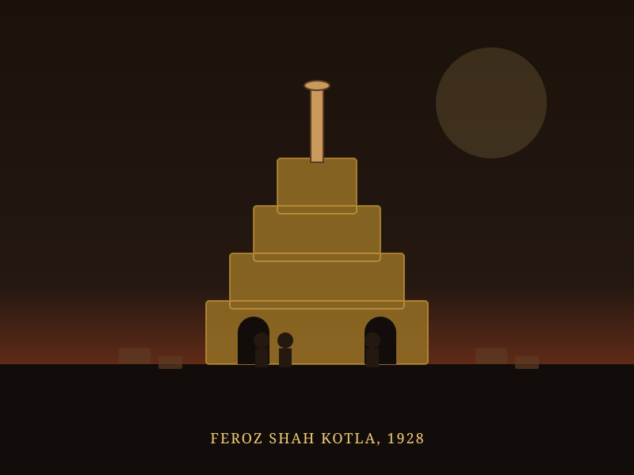
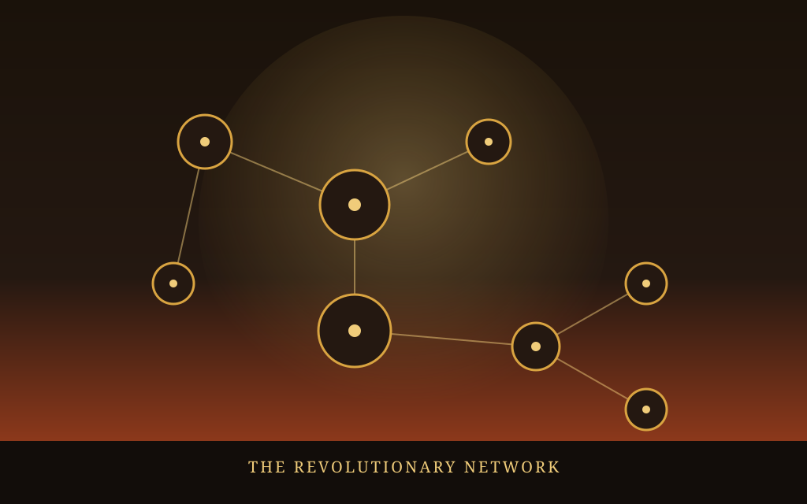

Revolutionary Network Explorer
Discover how India's armed revolutionary movement grew from a gymnasium in Bengal into an all-India network. Trace the threads connecting Anushilan Samiti, Jugantar, the Hindustan Republican Association and the HSRA — and the leaders, actions and ideas that bound them together.
How the Revolutionary Network Formed
India's armed revolutionary movement traces back to Anushilan Samiti, founded in Bengal in 1902 as a network of youth gymnasiums (akharas) that doubled as underground training grounds for anti-British resistance. In 1906, an inner circle within the Samiti, led by Barindra Kumar Ghosh with guidance from Aurobindo Ghosh, launched the weekly paper Jugantar, which gave its name to a closely linked revolutionary current.
The movement's centre shifted north in 1924, when Ram Prasad Bismil, Sachindra Nath Sanyal and others founded the Hindustan Republican Association (HRA) in Kanpur, aiming to establish a Federal Republic of India through armed struggle. After the 1925 Kakori Train Robbery led to the execution or imprisonment of several HRA leaders, survivors regrouped in 1928 at Feroz Shah Kotla, Delhi, reconstituting the organisation as the Hindustan Socialist Republican Association (HSRA) under Bhagat Singh's ideological leadership and Chandrashekhar Azad's command.
🕸️ At a Glance
- Earliest network: Anushilan Samiti, founded 1902 in Bengal.
- Connecting figure: Sachindra Nath Sanyal linked Anushilan Samiti, the Ghadar Party, and HRA/HSRA.
- Turning point: The 1925 Kakori Train Robbery and the 1928 refounding as HSRA.
- Geographic spread: From a Bengal-based movement to a front spanning Punjab, the United Provinces, and Bihar.
Organisations of the Revolutionary Movement
Four interlinked organisations, each building on the network and lessons of the one before it.
Anushilan Samiti
Est. 1902 · BengalBegan as a network of youth gymnasiums (akharas) that served as cover for underground revolutionary training and anti-British organising.
Jugantar
Est. 1906 · CalcuttaAn inner circle within Anushilan Samiti, formed by Barindra Kumar Ghosh and Bhupendranath Datta, publishing a weekly paper of militant nationalism.
Hindustan Republican Association
Est. 1924 · KanpurFounded to organise armed struggle for a Federal Republic of India; carried out the 1925 Kakori Train Robbery to fund its activities.
Hindustan Socialist Republican Association
Est. 1928 · DelhiThe HRA's 1928 reconstitution at Feroz Shah Kotla, blending nationalism with socialist ideals under Bhagat Singh and Chandrashekhar Azad.
The Revolutionary Network Map
Select an organisation to trace its connections to key leaders and actions. Select "All" to see the full network at once.
Chronology of the Revolutionary Movement
From a Bengal gymnasium network to a socialist republican front spanning northern India.
Anushilan Samiti Founded
A network of youth gymnasiums (akharas) forms across Bengal, doubling as cover for underground revolutionary organising.
Jugantar Emerges
Barindra Kumar Ghosh and Bhupendranath Datta form an inner circle within Anushilan Samiti, launching the weekly paper Jugantar.
Hindustan Republican Association Founded
Ram Prasad Bismil and Sachindra Nath Sanyal establish the HRA in Kanpur to pursue armed revolution for a Federal Republic of India.
The Kakori Train Robbery
HRA members carry out an armed train robbery to fund revolutionary activity; the resulting crackdown executes or imprisons several leaders.
HSRA Formed at Feroz Shah Kotla
Surviving HRA members regroup in Delhi, reconstituting as the Hindustan Socialist Republican Association under Bhagat Singh and Chandrashekhar Azad.
Networks Decline and Transform
Sustained British crackdowns weaken the organised revolutionary networks, even as their ideals continue to influence the wider independence movement.
Places and Symbols of the Movement
Illustrated impressions of the sites and symbols central to India's revolutionary network.




📚 References & Further Reading
- Wikipedia. Anushilan Samiti — History and Organisation.
- Wikipedia. Hindustan Socialist Republican Association.
- GKToday. Hindustan Socialist Republican Association — Origins and Ideology.
- Modern History Notes. Hindustan Republican Association (1924).
- Wikipedia. Sachindra Nath Sanyal — Revolutionary and Freedom Fighter.